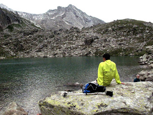
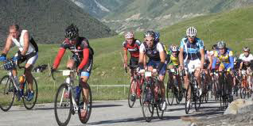

LE PROJET INDIVIDUALISÉ :
Chacun des compagnons bénéficie d’un accompagnement individualisé en fonction de son projet. Le projet est inscrit dans le cadre de la loi du 02 Janvier 2002
DÉFINITION DU PROJET :
La loi du 2 janvier 2002, rappelle la place centrale occupée par les compagnons en ESAT.
Chaque personne accompagnée a des attentes et des besoins singuliers, que l’équipe s’emploie à intégrer dans le projet.
L’ESAT met en place et suit les projets professionnels et accompagne ou assure un relai vers les partenaires adaptés pour les projets personnels (hébergement, loisirs, vacances…).

LES ÉTAPES DE LA MISE EN PLACE DU PROJET INDIVIDUALISÉ :
Le moniteur référent rédige un bilan du parcours professionnel du compagnon et apprécie les compétences de la personne dans les différents postes de travail de l’atelier.
Le chef de service médico-social rencontre le compagnon pour recueillir les attentes, besoins, projets.
Avec ces éléments, au cours d’une réunion d’équipe pluridisciplinaire (chef de service médicosocial, cadre technique et commercial, moniteur référent, animateur de formation, collaboratrice médico-social) nous vérifions l’adéquation du projet du compagnon en lien avec ces compétences et les missions de l’ESAT.
Cette réunion permet de faire le point et de définir de nouveaux objectifs qui seront rédigés dans l’avenant au contrat de soutien et d’aide par le travail.
Cet avenant reprend le parcours de la personne, les objectifs professionnels et les activités de soutien dont bénéficie la personne.
LE SUIVI DU PROJET :
Le professionnel chargé du suivi du projet rédige un document évaluant l’atteinte ou non des objectifs .
Le compagnon fait également le point sur l’avancé de son projet. Ces éléments sont étudiés en réunion intermédiaire.
Lorsque le projet est mené à son terme, de nouveau objectifs sont fixés avec le compagnon.

LES PARTENAIRES DE L’ACCOMPAGNEMENT :
Pour assurer un accompagnement de qualité, l’équipe de l’ESAT travaille en partenariat avec les différents établissements, ou structures qui sont au service de la personne :
foyers d’hébergement , CMP , services d’accompagnement, délégués à la tutelle, médecins…
Des réunions de synthèse sont organisées permettant ainsi une prise en compte de la personne dans son ensemble.